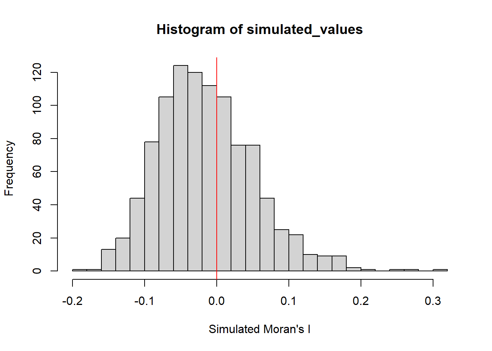

pacman::p_load(sf, spdep, tmap, tidyverse)Hands-on Exercise 6: Global and Local Measures of Spatial Autocorrelation
These exercises train on the collection of geospatial statistical methods specially designed for measuring global and local spatial association.
These spatial statistics are well suited for: - detecting clusters or outliers - identifying hot spot or cold spot areas - assessing the assumptions of stationarity - identifying distances beyond which no discernible association obtains.
Content
What is Spatial Autocorrelation - Measures of Global Spatial Autocorrelation - Measures of Global High/Low Clustering
Introducing Localised Geospatial Analysis - Local Indicators of Spatial Association (LISA)
Cluster and Outlier Analysis - Local Moran and Local Geary - Moran scatterplot - LISA Cluster Map
Hot Spot and Cold Spot Areas Analysis - Getis and Ord’s G-statistics
Case Studies
A. Global Measures of Spatial Autocorrelation
Overview
In Section A, we are learning how to compute Global and Local Measure of SPatial Autocorrelation (GSLA) by using the spdep package. The aim of this exercise is to:
import geospatial data using appropriate function(s) of sf package,
import csv file using appropriate function of readr package,
perform relational join using appropriate join function of dplyr package,
compute Global Spatial Autocorrelation (GSA) statistics by using appropriate functions of spdep package,
plot Moran scatterplot,
compute and plot spatial correlogram using appropriate function of spdep package
compute Local Indicator of Spatial Association (LISA) statistics for detecting clusters and outliers by using appropriate functions spdep package
compute Getis-Ord’s Gi-statistics for detecting hot spot and/or cold spot area by using appropriate functions of spdep package, and
to visualise the analysis output by using tmap package.
Getting Started
Asking ourselves
Policymakers need to verify if development has been evenly distributed or implemented within a county or province. Thus, this study involves the application of appropriate spatial statistical methods if the development is evenly distributed geographically.
If the answer to that is no, then we should observe if there is the presence of spatial clustering. If the answer to this question is yes, then we should check where are these clusters.
We are interested to examine the spatial pattern of a selected development indicator (i.e. GDP per capita) of Hunan Province, the People’s Republic of China.
The Study Area and Data
Two data sets will be used in this hands-on exercise:
Hunan province administrative boundary layer at county level. This is a geospatial data set in ESRI shapefile format.
Hunan_2012.csv: This csv file contains selected Hunan’s local development indicators in 2012.
Setting the Analytical Tools
Before starting, ensure that spdep, sf, tmap and tidyverse packages of R are installed.
sf is use for importing and handling geospatial data in R,
tidyverse is mainly use for wrangling attribute data in R,
spdep will be used to compute spatial weights, global and local spatial autocorrelation statistics, and
tmap will be used to prepare cartographic quality chropleth map.
Getting the Data into R Environment
This section focuses on bringing geospatial data and its associated table of attributes in the R environment. The grospatial data is in ESRI shapefile format and the attribute table is in csv format.
Importing shapefiles
Use st_read() of the sf package to import the Hunan shapefile.
hunan <- st_read(dsn="data/geospatial", layer="Hunan")Reading layer `Hunan' from data source
`C:\guacodemoleh\IS415-GAA\Hands-on_Ex\Hands-on_Ex06\data\geospatial'
using driver `ESRI Shapefile'
Simple feature collection with 88 features and 7 fields
Geometry type: POLYGON
Dimension: XY
Bounding box: xmin: 108.7831 ymin: 24.6342 xmax: 114.2544 ymax: 30.12812
Geodetic CRS: WGS 84Importing csv
Next, import the csv file by using read_csv() of readr().
hunan2012 <- read_csv("data/aspatial/Hunan_2012.csv")Performing relational joins
Check the column headers in the csv file.
names(hunan2012) [1] "County" "City" "avg_wage" "deposite" "FAI"
[6] "Gov_Rev" "Gov_Exp" "GDP" "GDPPC" "GIO"
[11] "Loan" "NIPCR" "Bed" "Emp" "EmpR"
[16] "EmpRT" "Pri_Stu" "Sec_Stu" "Household" "Household_R"
[21] "NOIP" "Pop_R" "RSCG" "Pop_T" "Agri"
[26] "Service" "Disp_Inc" "RORP" "ROREmp" Perform the relational join.
hunan <- left_join(hunan,hunan2012) %>%
select(1:4, 7, 15)- The left_join() function from the dplyr package is used to combine two datasets, hunan and hunan2012, based on common columns, i.e.
CountyandGDPPC. It keeps all the rows from hunan and adds matching rows from hunan2012. The result is a new dataset that includes information from both datasets. - The pipe operator, %>%, takes the result from the left_join() step and passes it as the first argument to the next step.
- select(1:4, 7, 15)` chooses columns 1 to 4, column 7 and column 15.
- The output is a new dataframe containing the abovementioned columns
Visualising Regional Development Indicator
Prepare a basemap and choropleth map showing the distribution of GDPPC 2012 using qtm() of tmap package
equal <- tm_shape(hunan) +
tm_fill("GDPPC",
n = 5,
style = "equal") +
tm_borders(alpha = 0.5) +
tm_layout(main.title = "Equal interval classification")
quantile <- tm_shape(hunan) +
tm_fill("GDPPC",
n = 5,
style = "quantile") +
tm_borders(alpha = 0.5) +
tm_layout(main.title = "Equal quantile classification")
tmap_arrange(equal,
quantile,
asp=1,
ncol=2)
Global Spatial Autocorrelation
Before computing global spatial autocorrelation statistics, spatial weights of the study area have to be contrusted first. The spatial weights are used to define the neighbourhood relationships between the geographical units, such as counties.
In the spdep package, poly2nb calculates contiguity weight matrices for a study area and determines which regions are adjacent to each other based on their shared boundaries. This function creates a list of neighbouring regions based on the regions’ shared boundaries. By default, the Queen criteria determines the first-order neighbours as the queen argument is set to TRUE.
Weights are stored in a matrix.
wm_q <- poly2nb(hunan, queen=TRUE)
summary(wm_q)Neighbour list object:
Number of regions: 88
Number of nonzero links: 448
Percentage nonzero weights: 5.785124
Average number of links: 5.090909
Link number distribution:
1 2 3 4 5 6 7 8 9 11
2 2 12 16 24 14 11 4 2 1
2 least connected regions:
30 65 with 1 link
1 most connected region:
85 with 11 links- There are 88 area units in Hunan, where the most connected area unit has 11 neighbours.
Row-standardised weight matrix
Next, equal weights are assigned to each neighbouring polygon. The weight will be evenly assigned using 1/nNeighbours to each county, then summing up the weighted income values.
- Despite the intuitiveness, polygons along the edges of the study area will base their lagged on fewer polygons and there may be an over- or under-estimation of the spatial autocorrelation.
For this exercise, the style=“W” will be used to achieve the aim of using equal weights.
rswm_q <- nb2listw(wm_q,
style="W",
zero.policy = TRUE)
rswm_qCharacteristics of weights list object:
Neighbour list object:
Number of regions: 88
Number of nonzero links: 448
Percentage nonzero weights: 5.785124
Average number of links: 5.090909
Weights style: W
Weights constants summary:
n nn S0 S1 S2
W 88 7744 88 37.86334 365.9147The input of nb2listw() must be an object of class neighbourhood, i.e. nb.
style
Takes in values:
B - basic binary
W - row-standardised, i.e. sums over all links to n
C - global-standardised, i.e. sums over all links to n
U - proportion of C over the number of neighbours, i.e. sums over all links to unity
S - the variance-stabilising code scheme, i.e. sums over all links to n
zero policy
- When it is set to TRUE, weight vectors of zero length are inserted for regions without neighbours inthe neighbours list. These will in turn generate lag values of zero, equivalent to the sum of products of the zero row, t(rep(0, length=length(neighbours))) %*% x, for arbitrary numerical vector x of length length(neighbours). The spatially lagged value of x for the zero-neighbour region will then be zero, which may (or may not) be a sensible choice.
Global Spatial AUtocorrelation: Moran’s I
This section performs Moran’s I statistics using moran.test() of spdep
Moran’s I Test
Moran’s I is a statistic measuring the spatial autocorrelation of a variable across a set of spatial units. It quantifies the degree of similarity (~+1) or dissimilarity (~-1) between neighbouring observations. The greater the degree of similarity, there is more positive spatial autocorrelation.
moran.test(hunan$GDPPC,
listw=rswm_q,
zero.policy = TRUE,
na.action=na.omit)
Moran I test under randomisation
data: hunan$GDPPC
weights: rswm_q
Moran I statistic standard deviate = 4.7351, p-value = 1.095e-06
alternative hypothesis: greater
sample estimates:
Moran I statistic Expectation Variance
0.300749970 -0.011494253 0.004348351 - It can be inferred that there is a weak positive spatial autocorrelation in the variable
GDPPC, where regions with similar values tend to be spatially clustered together.
Monte Carlo Moran’s I
Monte Carlo Moran’s I extends this measure by conducting a randomisation procedure to determine the statistical significance of the observed spatial autocorrelation. Monte Carlo Moran’s I is particularly useful when assessing whether the observed spatial autocorrelation is statistically significant or simply due to chance.
set.seed(1234)
bperm= moran.mc(hunan$GDPPC,
listw=rswm_q,
nsim=999,
zero.policy = TRUE,
na.action=na.omit)
bperm
Monte-Carlo simulation of Moran I
data: hunan$GDPPC
weights: rswm_q
number of simulations + 1: 1000
statistic = 0.30075, observed rank = 1000, p-value = 0.001
alternative hypothesis: greater- Since p-value is 0.001, it is highly unlikely that the observed spatial autocorrelation occurred by chance, which further supports the alternative hypothesis of greater spatial correlation.
- Using set.seed() is helpful for reproducibility. It sets a starting point, or seed, to generate the sequence of random numbers each time the seed value is used to run with the code.
Visualising Monte Carlo Moran’s I
mean(bperm$res[1:999])[1] -0.01504572var(bperm$res[1:999])[1] 0.004371574summary(bperm$res[1:999]) Min. 1st Qu. Median Mean 3rd Qu. Max.
-0.18339 -0.06168 -0.02125 -0.01505 0.02611 0.27593 library(ggplot2)# Initialize the plot canvas
plot.new()
# Simulated Moran's I values stored in bperm$res
simulated_values <- bperm$res
# Create the histogram
hist(simulated_values, freq = TRUE, breaks = 20, xlab = "Simulated Moran's I")
# Add a vertical line at 0
abline(v = 0, col = "red")
- Since the simulated values follow a normal distribution, it suggests that the simulated values follow a random pattern and there is no structured spatial autocorrelation present.
Global Spatial Autocorrelation: Geary’s
Geary’s C test
Geary’s C statistic, also known as the Geary’s coefficient or Geary’s ratio, is a measure of spatial autocorrelation that quantifies the similarity or dissimilarity of neighboring observations in a dataset.
The formula for calculating Geary’s C statistic is:
\[ C = (1 / (2 * W)) * sum((x_i - x_j)^2 / w_ij * s^2) \] Where:
C is the Geary’s C statistic.
W is the sum of the weights between all neighboring pairs of observations.
x_i and x_j are the values of the variable being analyzed for observations i and j.
w_ij is the weight between observations i and j, which represents the spatial relationship or distance between them.
s^2 is the sample variance of the variable being analyzed. Geary’s C statistic ranges from 0 to 2, with the following interpretations:
C close to 0 indicates strong positive spatial autocorrelation, meaning neighboring observations are very similar.
C close to 1 indicates no spatial autocorrelation, meaning neighboring observations are not more similar or dissimilar than expected by chance.
C close to 2 indicates strong negative spatial autocorrelation, meaning neighboring observations are very dissimilar.
In practice, the observed Geary’s C statistic is compared to the expected value under the null hypothesis of no spatial autocorrelation to assess the significance of spatial patterns in the data. Deviations from the expected value indicate the presence of spatial autocorrelation, either positive or negative, depending on the value of C.
Performing Geary’s C test requires the use of spdep’s geary.test()
geary.test(hunan$GDPPC, listw=rswm_q)
Geary C test under randomisation
data: hunan$GDPPC
weights: rswm_q
Geary C statistic standard deviate = 3.6108, p-value = 0.0001526
alternative hypothesis: Expectation greater than statistic
sample estimates:
Geary C statistic Expectation Variance
0.6907223 1.0000000 0.0073364 - There is strong evidence of positive spatial autocorrelation in
GDPPC. - The observed Geary C statistic significantly deviates from the expectation under the null hypothesis, indicating that neighbouring observationss are more similar than expected by chance alone.
Computing Monte Carlo Geary’s C
set.seed(1234)
bperm=geary.mc(hunan$GDPPC,
listw=rswm_q,
nsim=999)
bperm
Monte-Carlo simulation of Geary C
data: hunan$GDPPC
weights: rswm_q
number of simulations + 1: 1000
statistic = 0.69072, observed rank = 1, p-value = 0.001
alternative hypothesis: greater- There is strong evidence to reject the null hypothesis of no spatial autocorrelation, i.e. p-value<0.05.
- Hence, there is a significant positive spatial autocorrelation present.
Visualising Monte Carlo Geary’s C
mean(bperm$res[1:999])[1] 1.004402var(bperm$res[1:999])[1] 0.007436493summary(bperm$res[1:999]) Min. 1st Qu. Median Mean 3rd Qu. Max.
0.7142 0.9502 1.0052 1.0044 1.0595 1.2722 hist(bperm$res, freq=TRUE, breaks=20, xlab="Simulated Geary c")
abline(v=1, col="red")